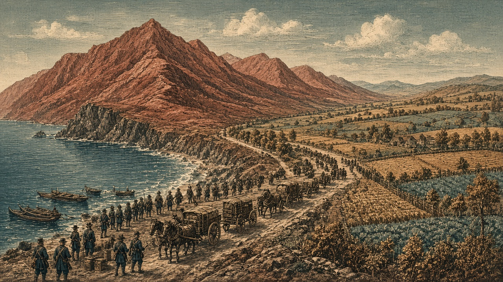

なのです、紅峰の農場と港を占領 首都へ艦砲、部隊全滅
農場で食糧五万トンを徴発 ローテンホルンへ艦砲が届き、都の部隊は全滅 公報損害は紅峰五千七百人、なのです二千五百人 オラニウムは朱川の町と軍港を占領、青海は橙原へ宣戦

【総合部】なのです主義人民共和国は第184期、紅峰公国の農場（42,53）と港（41,54）を占領した。農場では食糧五万トンを徴発。戦艦は首都ローテンホルン（41,52）へ艦砲射撃し、都の部隊は全滅した。陸の公報損害は紅峰五千七百人、なのです二千五百人。詳報は3面。
オラニウム連邦は朱川共和国の町（70,10）と軍港（73,11）を占領し、町では食糧四万五千百トンを徴発した。首都丹城（68,10）はなお朱川領。青海共和国は橙原自治共和国へ宣戦し、開戦は第189期。カペレナ王国は黒潮自治国の軍港（13,13）を占領した。詳報は2面・4面。
火災十六件、死者五万八千八百人 胡椒へ千八百人
火災は十六件で、死者は五万八千八百人。チェス＝シロバキア共和国が二万千百人、泰平天国が一万六千九百人。胡椒帝国には、テキスタン共和国から七百人、オリョルッル王国から千百人が着いた。詳報は6面・10面。